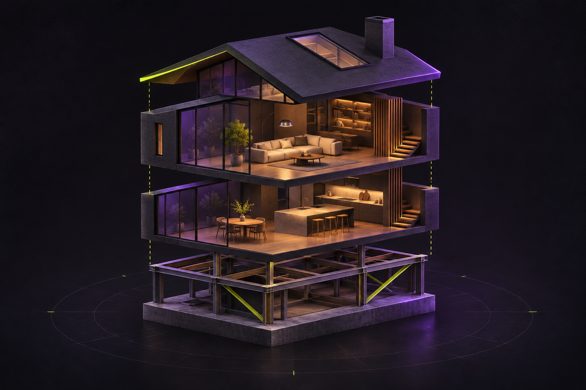
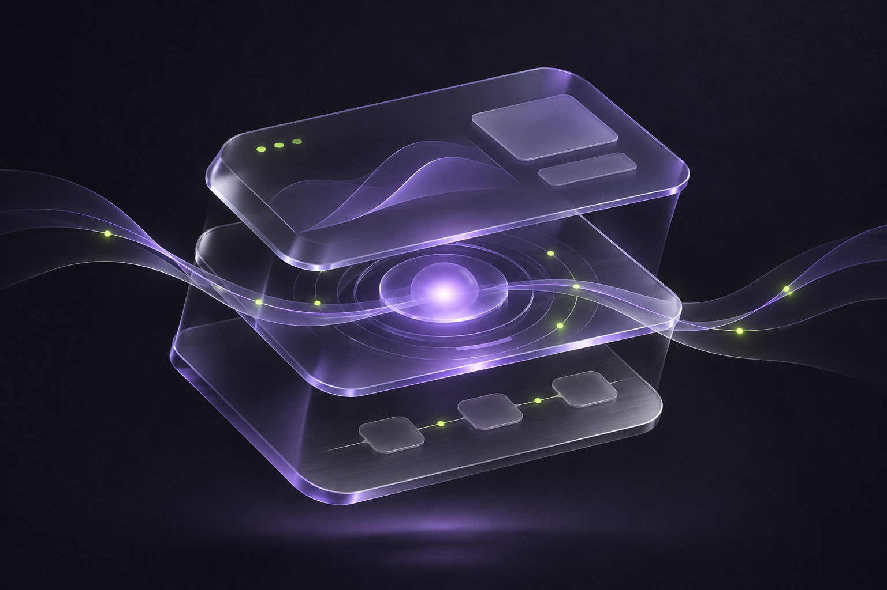

CLICK / FUTURE SCENE
01 · EXPLODED VIEW
Дом, который раскрывается
По клику фасад и этажи расходятся, камера мягко проходит внутрь и показывает устройство пространства.
PRODUCT & CREATIVE DEVELOPER · 2026
 01 · IVAN ARTEMIEV
01 · IVAN ARTEMIEV
ЧЕМ Я ЗАНИМАЮСЬ
Проектирую и запускаю цифровые продукты: превращаю бизнес-задачи в понятные интерфейсы, AI-сценарии и работающие MVP.
Соединяю продуктовый подход, визуальную подачу и разработку — от первого смысла до прототипа, который можно показать людям.
INTERACTIVE LAB · КОНЦЕПТ
Один из объектов уже ожил: в цифровом городе можно выбирать узлы и приближаться к ним камерой. Две другие сцены пока остаются концептами.

CLICK / FUTURE SCENEПо клику фасад и этажи расходятся, камера мягко проходит внутрь и показывает устройство пространства.

HOVER / FUTURE SCENEСтеклянные слои раскрывают путь запроса: данные, логика, интерфейс и готовый результат.
Выберите плитки, лепестки, диаграмму, пластины или сферу — камера подлетит к объекту внутри карточки. Зелёный маршрут связывает город.